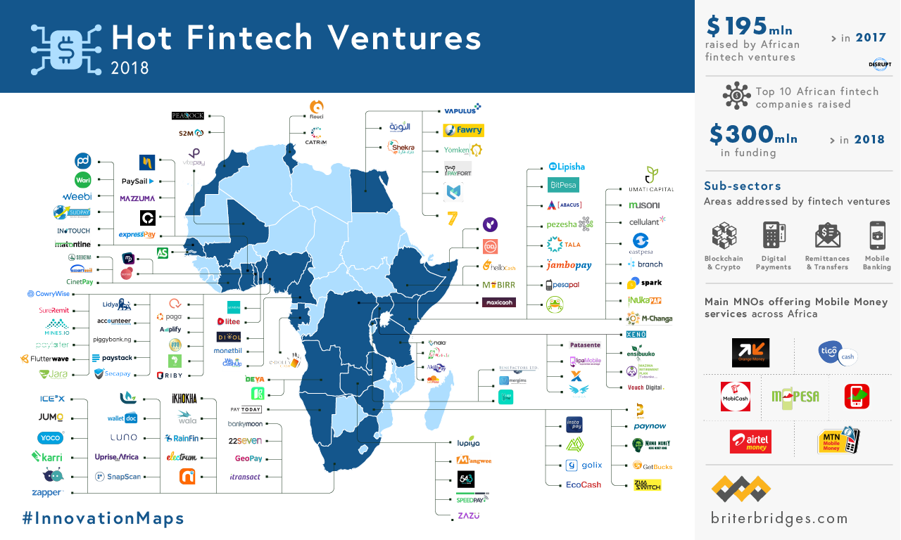

Payment for order flow and mobile money
The next African innovative fintech solutions that will empower money operators and consumers


Problems of one sector are sometimes solutions for others sectors. Payment for order flow has been implemented into the financial markets by exchanges and internalizers and this helped them increase the volume of transactions to their public venue or private and dark pools. We have seen with payment for order flow the birth of powerful financial operators that disrupted a whole canal of distribution of financial products by connecting directly individual institutional and institutional investors to public exchange or their internal matching engines built by leveraging the ease of developing distributed latency-free software able to process huge amount of data in realtime.
Partners who participate in customer acquisition and care are for the most important piece of a canal of distribution because they are those in touch with those for whom the product or service that is sold is. Africa is looking for innovative independent fintech solutions that will empower consumers and organizations and technology is an opportunity for this continent to find and build these solutions without the control of one power outside of the continent.
There are several signals that can make us believe that Africa is on the right path of leveraging technology to get financial freedom and power and to expand consumers’ access to financial services. Mpesa started the revolution years ago and all telecom operators and financial actors of all countries are scratching thinking and acting hard to surf this wave of digitization of the canal of distribution of financial services. It was not my first intention to use the word wave but this word Wave is the last name of a new entrant of the African fintech sector that is shaping and shaking the sector like a maverick, making all other actors react and adapt their business model. My opinion is that this innovation is incremental and that there are paths for completely disruptive innovations that will even include financial benefits for the end African consumer of financial services. Payment for order flow is one of these paths of disruptive innovations but its implementation requires the engagement of at least one powerful financial operator and one telecom operator who can join forces to initiate this new fintech business model that will connect telecom consumers to investment venues. A joint venture between a bank and a telecom operator for the next African fintech infrastructure and paid services. This next African fintech infrastructure is not related to this next African digital currency I was writing about months ago but maybe these two solutions can benefit each one from the other. What I am hoping to see isn't African youngs addicted to betting systems eased by the digitization of financial transactions but young Africans engaging themselves in holding portfolios of financial products like stocks and derivatives of African organizations and even international ones (this Dice project is all about that also).
Like how it happens for every new business model innovation there is always a redistribution of power and status among the incumbents and new entrants and this fight of status and power preservation is the friction that the innovation integrator is about to fight to get his or her innovation started.
As I cited Wave without willing to give them exposure I thought that it could be more equitable to also highlight one startup that I have been tracking because like this last one it also merits some cheap words from my part a bit of attention from you. This startup is Paystack, I don't know why but Nigeria has been leading the African tech revolution for years since now and I think that this country merit that the African tech entrepreneur that I am highlighting the huge progress that it has made at leveraging the power of technology as it does with music and movies. Maybe there is something related to demography and language that sustain this impact.
PS: Again I think that African is well armed to shape by itself its financial markets and services and to conquer the world with them.